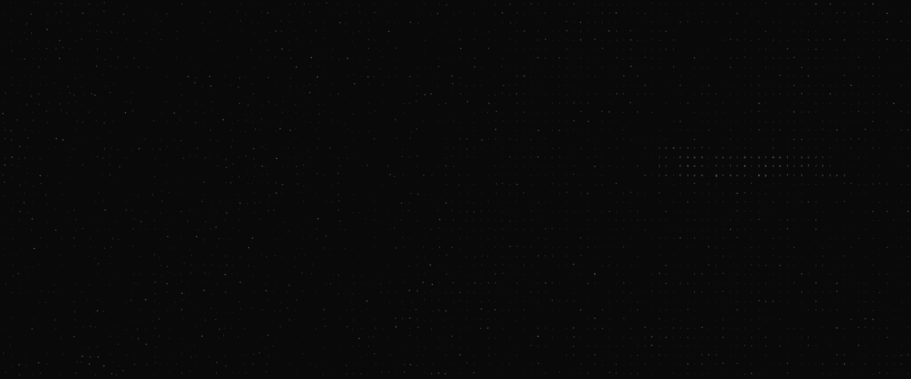

This is me, and some of what I've built along the way.
I like learning by doing. Some of it turned out useful. Some of it's just fun. Here's some of it.
Selected Work
2020 -
Present
Limha
A self-hosted home automation hub that speaks HomeKit, MQTT, and protocols no vendor bothered to document.
Technical Philosophies
- Performance is a feature, not a polish.
- Write code that the next person won't hate.
- Documentation is the soul of the software.
- Prefer simple solutions over "smart" ones.

Entropy Visualized
"In the void of the terminal, we find order."
Tooling & Environment
Systems
Java, C#, Elixir, Elm. Pragmatic by necessity, functional by preference.
Infrastructure
Kubernetes, NixOS. Reproducibility is the highest form of sanity.